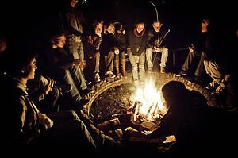

Omdat we allemaal verschillende 'individuen' zijn, hebben we ook zo onze eigen normen wat betreft
het dienen van Christus. Toch kunnen bepaalde gemeenschappelijke waarden ons helpen onze gezamenlijke doelen te definiëren en al onze inspanningen tot een eenheid te maken.
We vatten de belangrijkste waarden van de gemeente samen in de volgende tien stellingen.
- Wij geloven dat door de Geest gezalfd bijbels onderricht de katalysator is voor verandering van levens en de gemeente. Dit houdt het concept in van praktisch bijbels onderwijs. Lees Romeinen 12:7, 2 Timotheüs 3:16-17, Jakobus 1:23-25
- Wij geloven dat God diep bewogen is over de verloren mens en daarom moet dit ook onze gemeente aangaan. Dit houdt o.a. in, dat vriendschapsevangelisatie en wereldzending de hoogste prioriteit moeten hebben in onze gemeente. Lees Lukas 5:30-32, Lukas 15, Mattheüs 18:14
- Wij geloven dat de gemeente zowel cultureel relevant als bijbelgetrouw moet zijn en blijven. Dit betekent, dat onze gemeente in haar verkondiging, vorm, beleving, faciliteiten en drukwerk moet aansluiten bij de postmoderne mens. Lees 1 Korinthiërs 9:19-23
- Wij geloven dat discipelen van Christus echt en oprecht dienen te zijn en zich zouden moeten uitstrekken naar geestelijke groei. Dit betekent, dat persoonlijke integriteit, echtheid en authenticiteit bij de leden hoog op de agenda moeten staan. Lees Efeze 4:25-26 en 32, Hebreeën 12:1, Filippenzen 1:6
- Wij geloven dat de gemeente dient te functioneren als een hechte gemeenschap van dienaars, die op een oprechte manier hun gaven gebruiken. Dit betekent, dat er onderricht en training gegeven moet worden over dienstbaarheid, het gebruik van gaven en de roeping tot bedieningen. Lees 1 Korinthiërs 12 en 14, Romeinen 12, Efeze 4, Psalm 133:1
- Wij geloven dat liefdevolle relaties in alle aspecten van het gemeenteleven tot uiting moeten komen. Dit betekent, dat door liefde gedreven bedieningen in teamverband tot versterking van onderlinge relaties behoren te functioneren. Lees 1 Korinthiërs 13, Nehemia 3, Lukas 10: 1, Johannes 13:34-35
- Wij geloven dat de kring-aan-huis als kleine groep een ideale plaats is waar mensen zich kunnen ontplooien in hun relatie met God en naar elkaar toe. Dit houdt in, dat de kring ruimte moet bieden aan onderwijs en toepassing om te kunnen groeien in alle aspecten van discipelschap. Lees Lukas 6:12-13, Handelingen 2:44-47
- Wij geloven dat kwaliteit God eert en mensen inspireert. Dit betekent, dat alle activiteiten in en vanuit de gemeente geëvalueerd, kritisch beoordeeld en indien mogelijk tot meer kwaliteit verbeterd dienen te worden. Lees Spreuken 27:17. Kol. 3:1 7, Mal. 1:14
- Wij geloven dat gemeenten geleid moeten worden door mensen met leiderschapsgaven. Dit betekent, dat leiders gezocht, getraind en aangesteld moeten worden die, in alle ijver en liefde dienende, de strategie van de gemeente zullen uitvoeren en andere mensen zullen toerusten en bekwamen. Lees Nehemia 1 en 2, Romeinen 12:8, Handelingen 6:2-5
- Wij geloven dat het volledig toegewijd zijn aan Christus voor iedere gelovige normaal is. Dit houdt in, dat iedere gelovige zich zou moeten toeleggen op discipelschap, goed rentmeesterschap, totale overgave aan Christus en het najagen van de doelen van Gods koninkrijk. Lees 1 Koningen 11:4, Filippenzen 2:1-11, 2 Korinthiërs 8:7